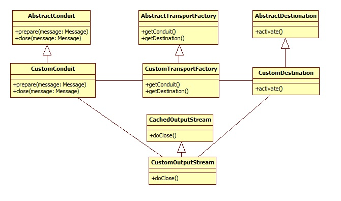
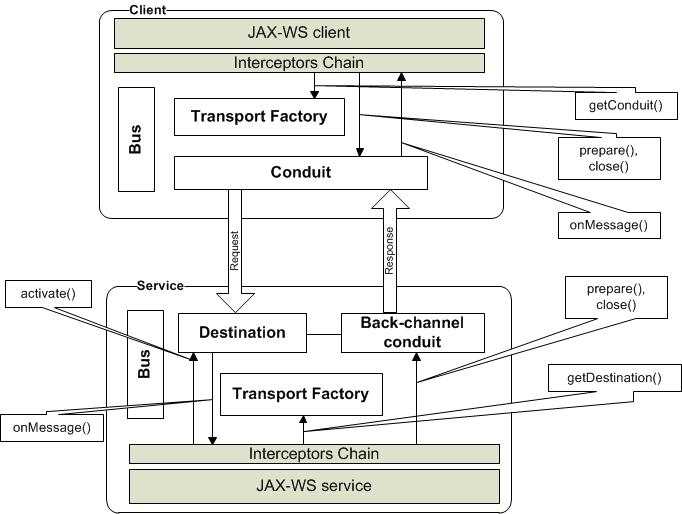

该页面总结了实现新的自定义CXF传输的经验和用例。
用例
基本上，有两种主要的用例来实现新的CXF传输：
- 提供CXF尚不支持的新物理协议（例如，udp或ftp）。可以通过与相应的Camel组件集成使用来解决某些此类情况，但是如果没有此类组件可用或不可行，则应考虑创建新的自定义CXF传输。
- 支持与另一个框架（如JBI或Camel）的紧密集成。在这种情况下，集成对于CXF应用程序将保持透明-它们只是在传输级别直接与目标框架对话。在这里，传输实现将负责将CXF交换，消息和故障转换并传输到目标框架。
当前，CXF发行版提供以下协议的传输实现：HTTP（S），JBI，JMS和Local（在一个JVM中）。骆驼还为骆驼交换实现了CXF传输。
建筑与设计
传输功能基于两个基本定义：管道和目的地。管道负责将消息发送到收件人和目的地，以便从发件人接收消息。为了发送响应，目的地需要其自己的反向通道管道（在请求-响应通信的情况下）。管道和目的地由TransportFactory创建。CXF根据传输URL选择正确的TransportFactory。 SOAP也被认为是高级传输，并且在CXF中具有自己的管道和目的地。
要将消息发送到物理通道，管道应访问消息上下文。在这种情况下，通常的做法是使用OutputStream的子类扩展CachedOutputStream。自定义流将被馈送消息，并提供根据传输要求以流或缓冲形式访问上下文的可能性。CachedOutputStream配置为仅将消息保留在内存中，直到达到预定义的大小。如果超过此大小，则消息将交换到磁盘。
下面显示了TransportFactory，Conduit，Destination和OutputStream的类图：

怎么运行的
下图表示了JAX-WS客户端与使用CXF传输的服务之间的交互：

简化的客户工作流程：
- 步骤1：JAX-WS客户端以这种方式调用服务：
URL wsdlURL = this.getClass().getResource("/HelloWorld.wsdl");
HelloWorldService service = new HelloWorldService(wsdlURL, SERVICE_NAME);
HelloWorld hw = service.getHelloWorldPort();
String result = hw.sayHi(TEST_REQUEST); }}
- 步骤2：CXF运行时根据一些条件选择正确的TransportFactory（如下所述）
- 步骤3：CXF运行时调用TransportFactory.getConduit（）方法来获取管道
- 步骤4：CXF运行时调用Conduit.prepare（）并将传出消息作为参数传递
- 步骤5：管道将自己的OutputStream（通常扩展为CachedOutputStream）设置为传出消息内容
- 步骤6：CXF运行时处理传出消息，调用拦截器链，并将传出消息写入管道的OutputStream流。CXF中的消息传递是面向流的；因此，该消息通常会继续发送，而不是以一束的形式发送，而是以流的形式发送。发件人仍可以处理邮件的最后字节，但第一个字节已发送给收件人。基本上，Conduit负责如何发送消息：使用流传输或收集整个消息并立即发送
- 步骤7：当CXF运行时完全处理传出消息时，它将调用Conduit.close（Message）方法。这意味着消息已完全写入OutputStream 。相应地，将调用OutputStream.doClose（）方法。
- 步骤8：在doClose（）方法中，Conduit将其余消息（或整个消息）发送给收件人
- 步骤9：在单向通信的情况下将关闭。跳至步骤14
- 步骤10：在请求-响应通信的情况下，管道将以同步或异步方式等待服务响应
- 步骤11：如果收到成功的响应，则管道会创建一个新消息，设置其上下文并将其作为传入消息在交换中作为传入消息放入
- 步骤12：如果接收到故障，则管道创建新消息，设置其上下文，并将其放置为故障消息，以作为故障消息交换
- 第13步：管道使用入站调用Observer.onMessage （）通知响应响应（即ClientImpl对象）。
- 步骤14：导管的实现会减少网络连接的参考计数，如果计数为零，则有可能关闭连接
- 步骤15：JAX-WS客户端代码以同步或异步方式接收响应
简化服务流程：
- 步骤1：例如，以这种方式注册JAX-WS服务：
HelloWorldImpl serverImpl = new HelloWorldImpl();
Endpoint.publish("udp://localhost:9000/hello", serverImpl);
- 步骤2：CXF运行时根据某些条件选择正确的TransportFactory（如下所述）
- 步骤3：CXF运行时调用TransportFactory.getDestination（）方法以获取目标
- 步骤4：一旦CXF运行时激活了端点（添加了侦听器等）， Destination.activate（）方法将被自动调用。
- 步骤5： Destination.activate（）的实现通常会打开网络传输连接并侦听传入的请求
- 步骤6：当请求到来时，目的地创建一条消息，设置内容，并通过传入 Observer.onMessage （）通知消息观察者（即ChainInitializationObserver对象）有关请求。消息内容另存为流；因此，运行时和业务逻辑即使未完全接收到的消息也可以开始处理。通常，传入的连接会保存在关联图中，以提取出来以发送适当的响应
- 步骤7：将以流形式的请求消息调用业务服务实现。如果是单向通信，则交换现在完成。在请求响应的情况下，业务实现会返回响应或引发错误异常
- 步骤8：CXF运行时通过Destination.getInbuiltBackChannel（）从目标请求反向通道管道
- 步骤9：将使用响应消息作为参数调用反向通道管道的prepare（）方法
- 步骤10：反向通道管道将其自己的OutputStream设置为消息上下文
- 步骤11：CXF运行时处理响应消息，调用拦截器链并为响应消息调用Conduit.close（Message）
- 第十二步最后，调用响应消息的OutputStream.doClose（）方法
- 步骤13：在doClose（）方法中， OutputStream类可以访问封送处理的响应消息，并将通过网络将此消息作为对客户端的响应进行发送。在进行流传输的情况下，此时消息的一部分可以已经发送到网络，而Conduit仅发送最后一部分并关闭发送。通常，仅在必要时缓存和创建指定协议的传入连接
运输工厂登记
有两种注册运输工厂的方式：以编程方式或通过Spring配置。
要以编程方式注册运输工厂，必须执行以下代码：
Bus bus = BusFactory.getThreadDefaultBus();
DestinationFactoryManagerImpl dfm = bus.getExtension(DestinationFactoryManagerImpl.class);
CustomTransportFactory customTransport = new CustomTransportFactory();
dfm.registerDestinationFactory(TRANSPORT_IDENTIFIER, customTransport);
ConduitInitiatorManager extension = bus.getExtension(ConduitInitiatorManager.class);
extension.registerConduitInitiator(TRANSPORT_IDENTIFIER, customTransport);
TRANSPORT_IDENTIFIER是唯一的传输ID（通常以“ http://apache.org/transports/PROTOCOL_PREFIX ”的形式）。
对于Spring配置，可以改为使用以下内容：
<bean class="org.company.cxf.transport.CustomTransportFactory"
lazy-init="false">
<property name="transportIds">
<list>
<value>TRANSPORT_IDENTIFIER</value>
</list>
</property>
</bean>
运输工厂选择
就找到绑定TransportFactory而言，CXF寻找负责物理网络通信的协议TransportFactory。在这种情况下，重要的是方法TransportFactory.getUriPrefixes（） 。此方法返回此TransportFactory支持的协议前缀列表。
当CXF客户端或服务尝试使用具有指定协议前缀（http：//，https：//，jms：//，local：//）的URL进行通信时，CXF会查看已注册的传输工厂映射，并为此找到合适的映射字首。如果找不到此协议的TransportFactory，则CXF引发相应的异常。
客户端配置：
<jaxws:client id="FlightReservationClient"
xmlns:serviceNamespace="http://www.apache.org/cxf/samples/FlightReservation"
serviceClass="org.apache.cxf.samples.flightreservation.FlightReservation"
serviceName="serviceNamespace:FlightReservationService" endpointName="serviceNamespace:FlightReservationSOAP">
address="http://localhost:8040/services/FlightReservationService">
</jaxws:client>
…
TransportFactory类：
…
private static final Set<String> URI_PREFIXES = new HashSet<String>();
static {
URI_PREFIXES.add("http://");
URI_PREFIXES.add("https:");
}
public Set<String> getUriPrefixes() {
return URI_PREFIXES;
}
导管和目标生命周期
目标通常由服务在启动时创建，并由关机释放。可以为每个请求重新创建管道，也可以基于端点信息在整个客户端生命周期内对其进行缓存。客户端可以使用不同的协议对端点进行并发调用，并将它们绑定到不同的管道。
并发方面
管道和目标对象可以由多个线程同时访问。实现应注意该类的线程安全性。
流媒体
如果物理协议支持，则强烈建议不要中断Conduit和Destination实现中的流。CXF完全以流为导向–带来高性能和可伸缩性。
参考文献
理解CXF传输层并实现自己的传输的起点是什么？阅读CXF文档CXF传输概述并分析现有CXF传输的源代码很有意义（本地和JMS更为简单）。它们位于相应的包中：org.apache.cxf.transport.local和org.apache.cxf.transport.jms。